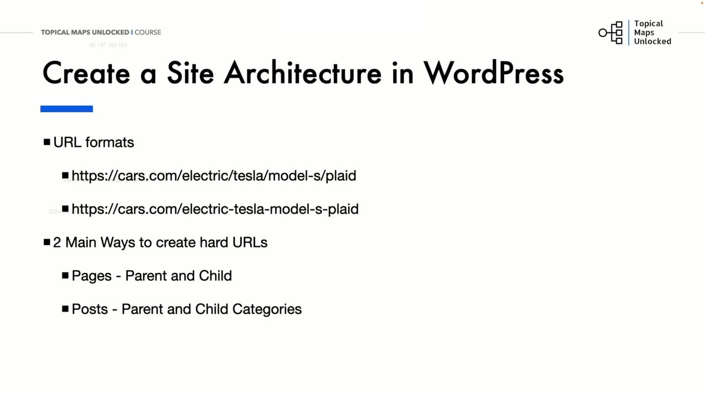
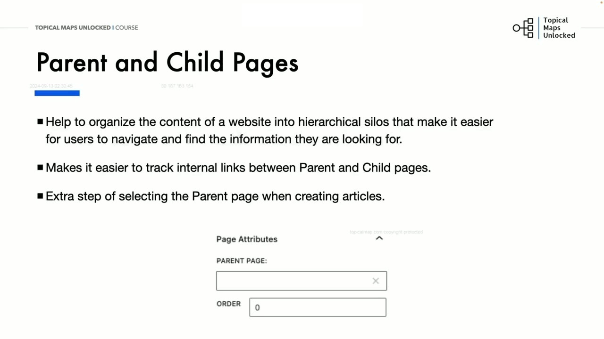
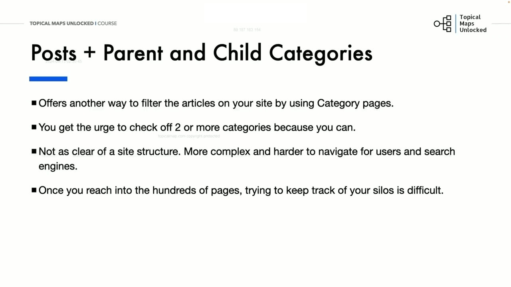

Creating the Site Architecture in WordPress
1. Hai phương pháp triển khai cấu trúc URL vật lý trên WordPress
Trong bài học này, Yoyao hướng dẫn cách hiện thực hóa kiến trúc Topical Map lên hệ quản trị nội dung mã nguồn mở phổ biến nhất hành tinh: WordPress. Để tạo ra các đường dẫn URL phân cấp cứng (Hard URLs dạng domain.com/category/subcategory/post), WordPress cung cấp 2 phương pháp chính thống:
- Phương pháp 1: Sử dụng Pages với tính năng Trang cha và Trang con (Parent and Child Pages).
- Phương pháp 2: Sử dụng Posts kết hợp Chuyên mục cha và Chuyên mục con (Parent and Child Categories).
Mỗi phương pháp đều có những ưu điểm và sự đánh đổi về mặt kỹ thuật mà người quản trị website cần cân nhắc kỹ lưỡng.

2. Phương pháp 1: Pages với tính năng Phân cấp Trang cha - Trang con
Đối với định dạng Pages (Trang tĩnh) trên WordPress, hệ thống tích hợp sẵn tính năng Thuộc tính trang (Page Attributes) ở thanh bên phải:
- Khi tạo một trang mới (ví dụ:
Tesla Model S Plaid), tại ô Trang cha (Parent Page), bạn chỉ cần chọn trang cấp trên của nó làTesla Model S. - Ngay lập tức, WordPress sẽ tự động tạo ra một cấu trúc URL lồng nhau hoàn hảo:
https://cars.com/electric/tesla/model-s/plaid. - Ưu điểm lớn nhất của phương pháp này là nó tổ chức website thành các Silo phân cấp cực kỳ chặt chẽ và giúp việc theo dõi liên kết nội bộ giữa trang cha và trang con trở nên cực kỳ dễ dàng.
- Tuy nhiên, nhược điểm là bạn bắt buộc phải nhớ chọn trang cha mỗi khi xuất bản một bài viết mới, điều này có thể gây nhầm lẫn nếu đội ngũ cộng tác viên viết bài không được đào tạo kỹ.

3. Phương pháp 2: Posts kết hợp Chuyên mục phân cấp và Lời khuyên xương máu
Phương pháp thứ hai là sử dụng Posts (Bài viết) kết hợp thiết lập cấu trúc đường dẫn tĩnh Permalink chứa /%category%/%postname%/ và tạo các Chuyên mục cha - con (Parent & Child Categories):
Mặc dù phương pháp này cho phép người dùng lọc bài viết qua các trang lưu trữ chuyên mục (Category Archive Pages), nhưng Yoyao đưa ra một lời cảnh báo kỹ thuật xương máu:
- Cám dỗ tích chọn nhiều chuyên mục: Người viết thường có xu hướng tích chọn 2 hoặc nhiều chuyên mục cho cùng một bài viết, điều này làm vỡ cấu trúc Silo và gây ra tình trạng trùng lặp nội dung nghiêm trọng.
- Khó kiểm soát khi quy mô website mở rộng: Khi website phát triển lên tới hàng trăm hoặc hàng ngàn bài viết, việc theo dõi xem bài nào thuộc Silo nào qua hệ thống chuyên mục lồng nhau trở nên vô cùng phức tạp và rối rắm.
Yoyao đúc kết: Dù bạn chọn Pages hay Posts, điều quan trọng nhất là bạn phải duy trì kỷ luật cấu trúc tuyệt đối, bám sát 100% bản thiết kế của Topical Map để đảm bảo dòng chảy thẩm quyền của website luôn được tập trung cao nhất.
Một kiến trúc website nhất quán và rõ ràng sẽ giúp cả người dùng lẫn các công cụ tìm kiếm dễ dàng định hướng, từ đó giúp trang web nhanh chóng xác lập thẩm quyền chuyên môn vững chắc trong toàn ngành.

Nguồn và đối chiếu
- Topical Maps Unlocked 2.0 · 04-Creating the Site Architecture in WordPress (Video bài học chính).
- Bản tiếng Anh không có video riêng cho bài học này; nội dung đối chiếu trực tiếp từ slide và video chính.